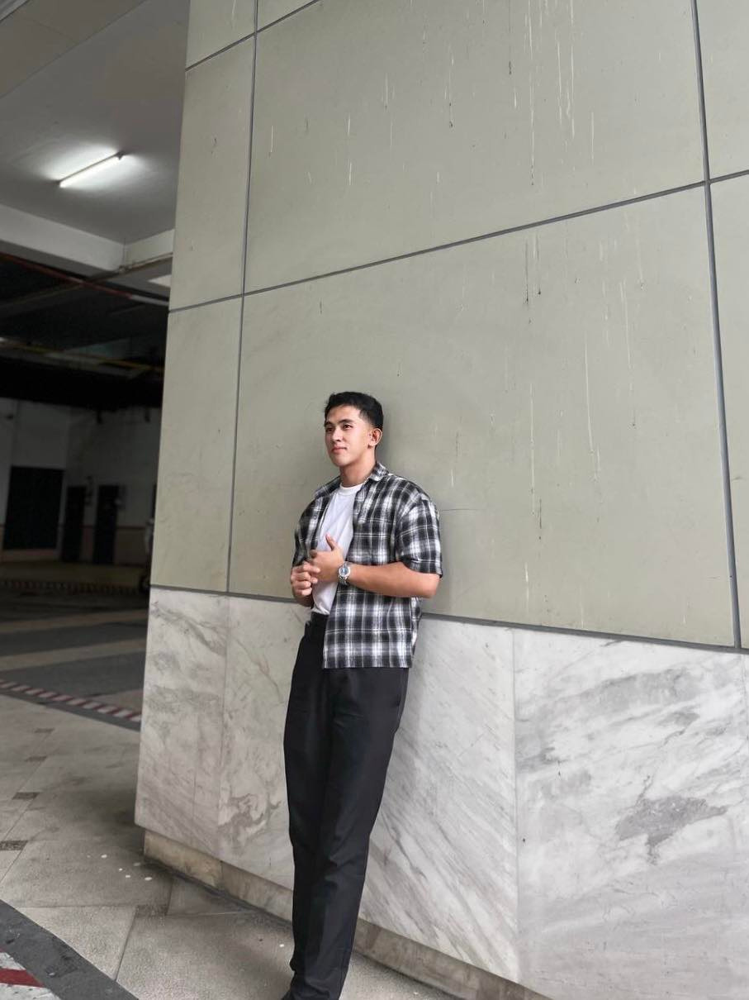

About JJCC Railways
A simpler way to plan your journey.
JJCC Railways is a railway reservation website that brings journey planning, search, booking details, and passenger support together in one convenient place.
Who we are
We are student developers and designers from New Era University’s College of Informatics and Computing Studies. JJCC Railways was created in partial fulfillment of the requirements for IT Elective 1 (Web Development). Through this project, we explore how digital tools can make travel planning clearer and more convenient by bringing together route search, booking review, travel information, and eligible request management in one platform.
Our Mission
To create an accessible, user-friendly railway reservation experience that helps passengers plan trips, understand their booking information, and manage their travel needs with greater confidence.
Our Vision
To become a thoughtful model for a connected and passenger-centered railway platform, where useful technology, clear information, and dependable design make every journey easier to navigate.
Meet the team
The Developers
The people behind the JJCC Railways experience.
Jan Aevan R. Calacday
Full-Stack Developer
Carnby G. Villarosa
Full-Stack Developer
Jaydee M. Pamplena
Full-Stack Developer

Carl Andrei D. Joaquin
UI / UX Designer